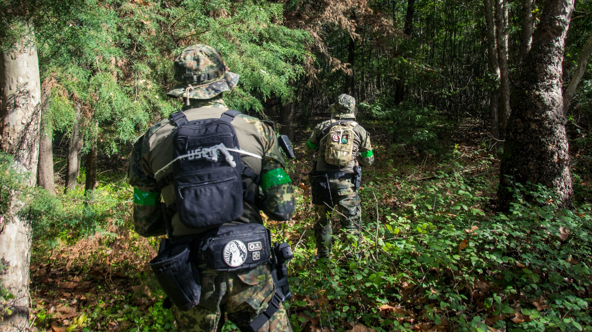
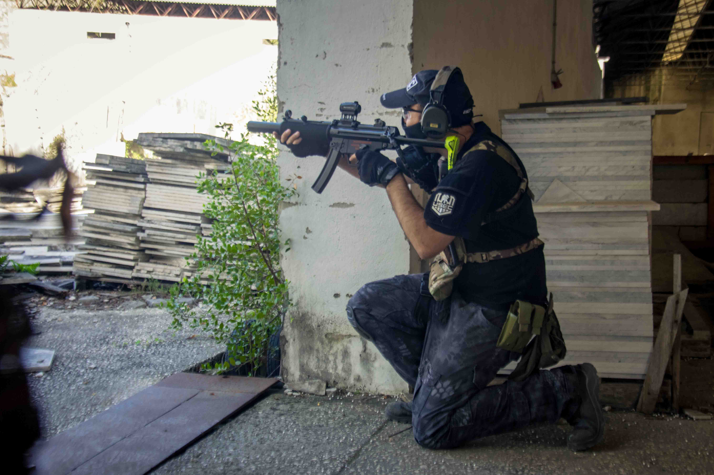

USEC / EXTERNAL DETACHMENT
USEC
VESPEREXTERNAL OPERATIONS / PORTUGAL
USEC VESPER / ONE DETACHMENT. THE SAME AFFILIATION.OPEN BRIEFING ↓
USEC / VESPERRECONNAISSANCERECOVERY✳EXTERNAL PRESENCE
01 / UNIT BRIEFINGCOIMBRA / PORTUGAL
A familiar patch.
A different sector.
Structure and capabilities ↗9ACTIVE OPERATORS
7ARCHIVED ALBUMS
66FIELD PHOTOGRAPHS
02 / CONTRACT RECORDSUSEC / VSP
Not everything reaches
the final report.
Enter the restricted channel ↗RESTRICTED CHANNEL / INDEX HIDDENNot every record
Not every record
is in plain sight.
Restricted channel stay outside the public index. Open the unit channel to view the available records.

USEC / EXTERNAL PRESENCE
Open the Vesper archive ↗03 / UNIT PERSONNELONE CHANNEL. MANY SPECIALITIES.